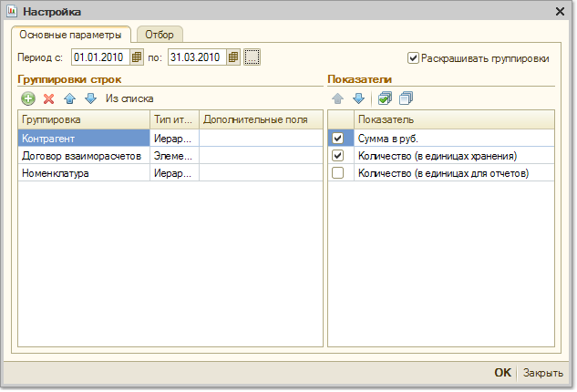

Отчет «Взаиморасчеты с комитентами»
Меню Отчеты > Взаиморасчеты > Взаиморасчеты с комитентами
Отчет предназначен для учета номенклатурных позиций, принятых на комиссию, а также для отслеживания взаиморасчетов с комитентами. Таким образом, в одном отчете можно получить полную информацию о том, у каких комитентов и сколько товаров было принято на реализацию, какие товары и какого комитента были проданы, за какие товары еще не отчитались перед комитентом, сколько было перечислено денег комитенту за проданные товары, какое комиссионное вознаграждение было начислено.

С помощью группировок, представленных в настройках отчета, можно детализировать информацию в отчете до уровня документов совершивших хозяйственную операцию:
- Документ движения (регистратор) – документ, который совершил хозяйственную операцию.
Отчет может быть сгруппирован по конкретным позициям номенклатуры ("Номенклатура"). Кроме того отчет можно получить в разрезе характеристик номенклатуры (цвет, размер, габариты и т.д), серий номенклатуры (сертификат, серийный номер, срок годности), а также в разрезе различных свойств и категорий номенклатуры.
В качестве показателей отчета используется количество (в единицах хранения остатков) и сумма (в валюте управленческого учета).
С помощью установки параметров отбора, представленных в отчете можно отобрать информацию по конкретному комитенту, группе комитентов, произвольному списку комитентов, по комитентам, имеющим определенные свойства и категории.
В таблице сформированного отчета имеются следующие графы:
-
Долг/Остаток на начало – в первой графе отображается долг комитенту за те товары, за которые компания перед ним отчиталась, но не оплатила на дату начала формирования отчета, а во второй - количество и сумма комиссионного товара комитента, имеющегося в наличии в компании.
-
Не отчитались на начало – количество товара, принятого на реализацию у комитента, которое было продано, но за который еще не отчитались перед комитентом (не проведен документ "Отчет комитенту") на дату начала формирования отчета.
-
Принято на реализацию – количество и сумма товара, принятого на реализацию от комитента за период формирования отчета.
-
Реализовано – количество и сумма товара, принятого на реализацию от комитента и проданного за период формирования отчета.
-
Предоставлено отчетов – количество и сумма товара, принятого на реализацию от комитента, которое было реализовано, и по нему были проведены документы "Отчет комитенту" в период формирования отчета.
-
Сумма вознаграждения – сумма начисленного комиссионного вознаграждения за период формирования отчета.
-
Оплачено – сумма оплаты, перечисленная комитенту за период формирования отчета за проданные комиссионные товары.
-
Долг/Остаток на конец – в первой графе отображается долг комитенту за те товары, за которые перед ним отчитались, но еще не оплатили на дату конца формирования отчета, а во второй - количество и сумма комиссионного товара, оставшегося в компании на дату конца формирования отчета.
-
Не отчитались на конец – количество и сумма комиссионного товара, которые были проданы, но за которые еще не отчитались перед комитентом (не проведен документ "Отчет комитенту" ) на дату конца формирования отчета.
Важно! Если в отчете используется отбор по номенклатуре, сумма оплаты в отчет не выводится, т.к. оплата не распределяется по конкретным позициям номенклатуры